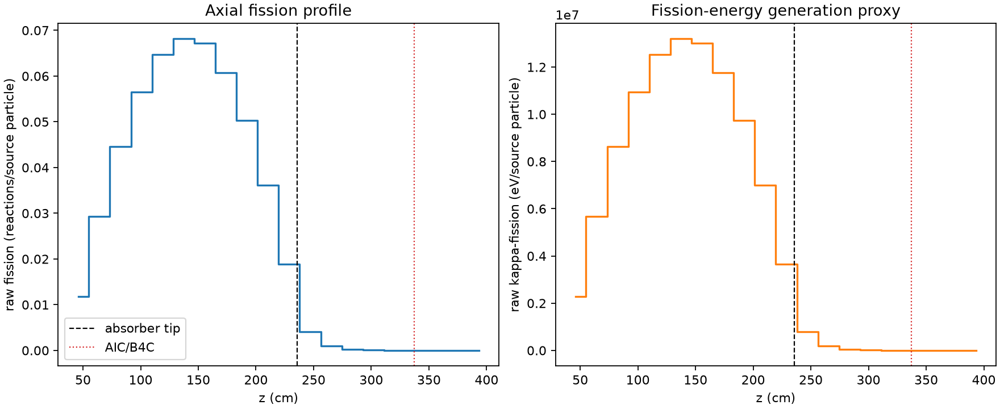
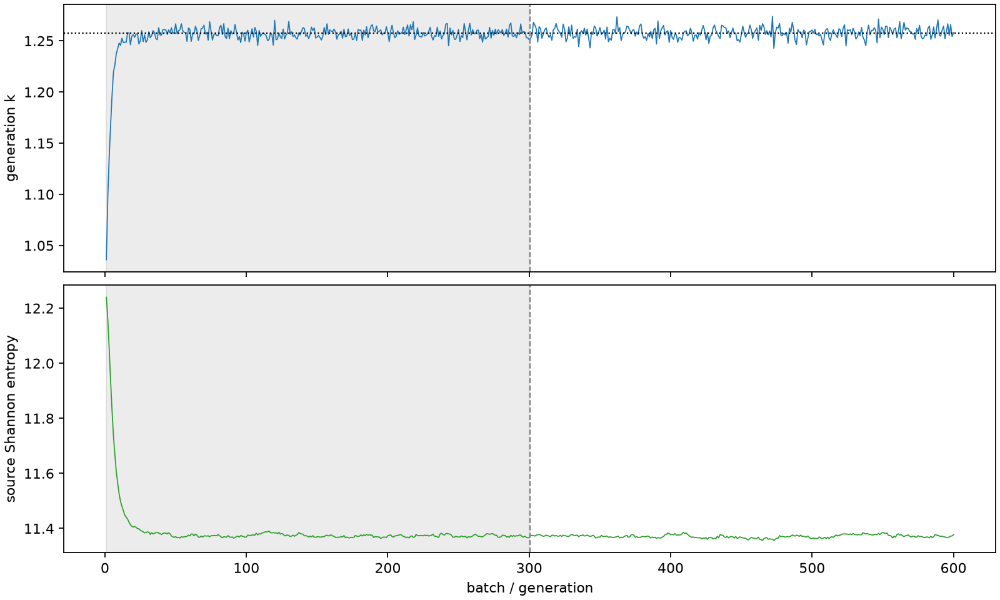

| field | value |
|---|---|
| experiment | V2-STAGE_256_OGRENCI_03-0007 |
| k | 1.2577319932209101 |
| MC standard error | 0.00019041793304849238 |
| seconds | 1123.5328172169975 |
| acceptance | not_assessed |
| convergence | review_required |
Completed is output integrity only; physical and statistical review required. Zero tallies do not prove zero production or zero uncertainty.
| diagnostic | value |
|---|---|
| geometric fuel voxels | 5280 |
| zero fission tally voxels | 335 |
| low signal fuel voxels | 1460 |
| low signal fission share | 0.00010223933569240249 |
| low signal kappa share | 0.00010227632793595942 |
| important fission share | 0.9500540751955364 |
| previous filter included | 3820 |
| duration estimate s | 1562.5173488400023 |
| actual minus estimate s | -438.98453162300484 |
| fission relative MC error | statistics |
|---|---|
| all_geometric_fuel | {"voxels": 5280, "positive_mean_voxels": 4945, "zero_mean_voxels": 335, "undefined_relative_error_voxels": 335, "median": 0.012437093705571722, "p95": 0.9604160544230125, "maximum": 1.0000000000000002} |
| low_signal | {"voxels": 1460, "positive_mean_voxels": 1125, "zero_mean_voxels": 335, "undefined_relative_error_voxels": 335, "median": 0.621668187382702, "p95": 1.0, "maximum": 1.0000000000000002} |
| important_95pct | {"voxels": 2520, "positive_mean_voxels": 2520, "zero_mean_voxels": 0, "undefined_relative_error_voxels": 0, "median": 0.007577643406941292, "p95": 0.011832868322861555, "maximum": 0.014422940351326591} |
| outside_previous_filter | {"voxels": 1460, "positive_mean_voxels": 1125, "zero_mean_voxels": 335, "undefined_relative_error_voxels": 335, "median": 0.621668187382702, "p95": 1.0, "maximum": 1.0000000000000002} |
| kappa_fission relative MC error | statistics |
|---|---|
| all_geometric_fuel | {"voxels": 5280, "positive_mean_voxels": 4945, "zero_mean_voxels": 335, "undefined_relative_error_voxels": 335, "median": 0.012422209872789044, "p95": 0.9607881070915056, "maximum": 1.0000000000000002} |
| low_signal | {"voxels": 1460, "positive_mean_voxels": 1125, "zero_mean_voxels": 335, "undefined_relative_error_voxels": 335, "median": 0.6215937129421479, "p95": 1.0, "maximum": 1.0000000000000002} |
| important_95pct | {"voxels": 2520, "positive_mean_voxels": 2520, "zero_mean_voxels": 0, "undefined_relative_error_voxels": 0, "median": 0.007568857611554514, "p95": 0.011820396805235058, "maximum": 0.014405463374704353} |
| outside_previous_filter | {"voxels": 1460, "positive_mean_voxels": 1125, "zero_mean_voxels": 335, "undefined_relative_error_voxels": 335, "median": 0.6215937129421479, "p95": 1.0, "maximum": 1.0000000000000002} |
| axial bin | fission share | kappa-fission share |
|---|---|---|
| 1 | 0.023067052808111412 | 0.023067944551476073 |
| 2 | 0.05715452871141753 | 0.05715417549718908 |
| 3 | 0.08674094744748931 | 0.08674044484177797 |
| 4 | 0.10995778752758126 | 0.10995728436945876 |
| 5 | 0.1259656648542528 | 0.12596486520200503 |
| 6 | 0.13264686996824201 | 0.13264612544273857 |
| 7 | 0.13074316575174413 | 0.13074224089572056 |
| 8 | 0.11833815916335515 | 0.11833757405157744 |
| 9 | 0.0978434974461607 | 0.09784316092874631 |
| 10 | 0.07024391595496948 | 0.0702435920011381 |
| 11 | 0.03669139668639662 | 0.03669196421652011 |
| 12 | 0.008011279672842585 | 0.00801400616646082 |
| 13 | 0.0019581752067228263 | 0.0019588381099581113 |
| 14 | 0.0004799836097507622 | 0.0004801477126559212 |
| 15 | 0.00012003862977337661 | 0.00012008491046776844 |
| 16 | 3.0084423283507527e-05 | 3.0093415140444456e-05 |
| 17 | 5.670885659810983e-06 | 5.673942661697182e-06 |
| 18 | 1.0567102828299619e-06 | 1.0588483275217473e-06 |
| 19 | 5.714543377062146e-07 | 5.718958106620724e-07 |
| 20 | 1.530876264602534e-07 | 1.5300016899391644e-07 |
Histories include the inactive-to-active transition at batch 300. kappa-fission approximates fission energy production, not total heat deposition.

